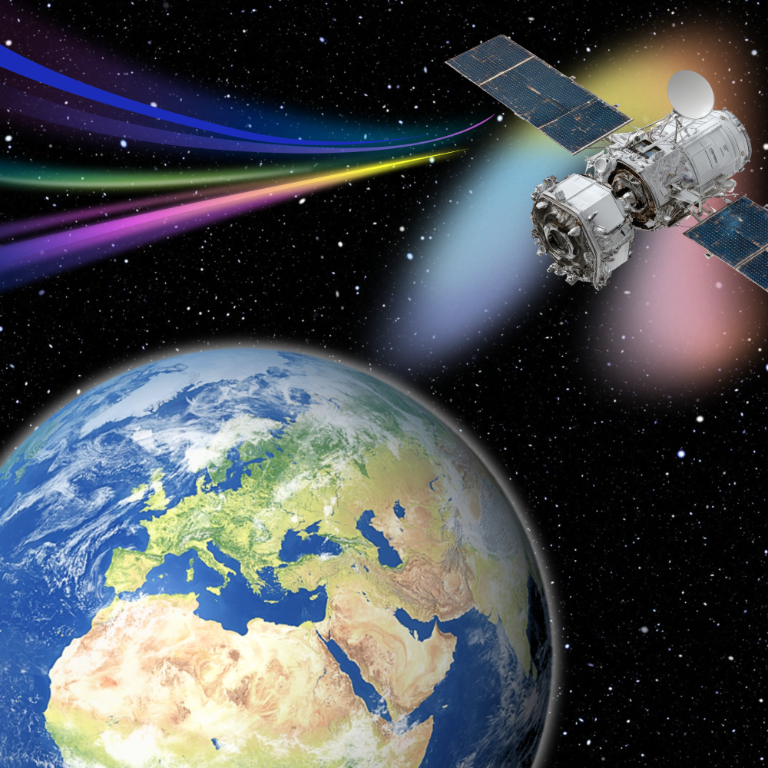

Will the site see sunlight?
Solar direction and local terrain affect when surface equipment can receive direct sunlight and generate power.

COSMIC VARIANCE View project on GitHub ↗NASA Space Apps Challenge · Ankara 2026
LunaSight helps people explore how landing location and arrival time can shape sunlight and direct-to-Earth communication near the lunar south pole.
The mission challenge
At the lunar south pole, nearby sites and different dates can have very different local views of the Sun and Earth. Finding the right trade-off can mean switching between specialist tools and making sense of data that is hard to compare quickly.
Solar direction and local terrain affect when surface equipment can receive direct sunlight and generate power.
Terrain can block a direct-to-Earth link. A promising lighting window does not automatically mean a clear communications path.
Launch and hardware schedules shift. Planners need a fast way to explore alternate dates and locations together.
Our solution
Cosmic Variance built LunaSight to make these engineering constraints easier to see, compare, and explain. An interactive Moon connects a selected location to a horizon panorama, while a mission timeline and telemetry bring sunlight and communications into the same view.
Try the LunaSight demo →A quick tour
The browser demo is designed for quick exploration by planners, educators, and curious explorers.
Select a candidate site, enter coordinates, or click a location on the rotatable Moon.
Choose a mission epoch and move through the timeline to see conditions evolve.
Look around the panorama and compare modeled Sun/Earth positions with the horizon.
Review sunlight, link estimates, visibility windows, and the scenario assessment.
Jury simulation · guided starts
Each launch opens the live HUD at the same UTC epoch so you can compare how each candidate site's modeled horizon changes sunlight and Earth visibility.
Start with the reference site, then use the timeline to see how the Sun and Earth move against its horizon.
Launch Slater simulation →Compare a different local horizon and inspect when direct-to-Earth visibility aligns with the lighting window.
Launch Malapert simulation →Explore a terrain-sensitive case and compare the modeled Sun and Earth directions with the rim profile.
Launch Nobile simulation →These guided starts use the browser demo's analytic ephemeris and illustrative horizon profiles. They are teaching scenarios, not measured terrain predictions or landing recommendations.
Transparent by design
The browser demo uses an analytic ephemeris by default and illustrative horizon/panorama information; it is not backed by a complete high-resolution terrain model. Optional JPL Horizons samples can be loaded in the app. Results are educational and exploratory, not landing certification or operational guidance. Detailed mission analysis requires validated ephemerides, local topography, and engineering review.